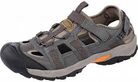
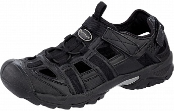

Сандалии мужские Outventure Flintbrook
Существуют размеры от 39 до 46.
Цена 2000 руб.


|
Состав: |
верх - 100% синтетическая кожа; подошва - резина, этилвинилацетат |
|
Артикул модели: |
OSM381OUT |
|
Возрастная группа: |
Взрослые |
|
Пол: |
М |
Описание
Мужские сандалии для водного, горного туризма и повседневного использования. Верх выполнен из влагостойкой синтетической кожи. Система быстрой шнуровки обеспечивает равномерное затягивание, надежную фиксацию и посадку по стопе. Массивный резиновый бампер обеспечивает защиту пальцев стопы от корней и камней в условиях горного туризма. Формованная стелька из ЭВА обладает хорошими амортизирующими свойствами и поддерживает свод стопы. Дренажные отверстия в стельке обеспечивают отличный паро- и влагоотвод. Особый метод крепления верха обуви к подошве обеспечивает более высокую гибкость и прочность обуви. Промежуточная подошва из ЭВА обеспечивает легкий вес и амортизацию ударных нагрузок. Подошва имеет систему сквозных отверстий, что обеспечивает вентиляцию стопы и быстрый вывод влаги при использовании во время активностей на воде. Подмётка с рельефным протектором обеспечивает отличное сцепление с поверхностью.
Недостатки: по всей видимости, слабая "мягкая" пятка, что подходит далеко не всем.